청소년상담사-2급(2교시) (2019-10-05 기출문제)
1과목: 진로상담
1. 특성ㆍ요인 이론에 관한 평가로 옳지 않은 것은?
- 자아개념을 지나치게 강조하고 있다.
- 검사에 대한 예언타당도의 문제가 있다.
- 검사에 대한 구인타당도의 문제가 있다.
- 직업선택을 일회적인 행위로 간주하고 있다.
- 장기간에 걸친 진로발달 과정을 도외시하고 있다.
(정답률: 40%)

2. 진로상담자의 역할로 옳지 않은 것은?
- 내담자의 진로를 직접 설계해준다.
- 내담자의 대인관계기술을 향상시킨다.
- 내담자의 의사결정기술을 향상시킨다.
- 표준화된 심리검사를 실시하고 해석한다.
- 내담자가 진로탐색활동을 하도록 격려한다.
(정답률: 58%)
3. 크럼볼츠(J. Krumboltz)가 제안한 사회학습진로이론에 관한 설명으로 옳지 않은 것은?
- 개인의 진로개발 과정에서 우연의 영향력을 중요시 한다.
- 진로의사결정 과정에서 자기효능감과 결과기대를 중요시 한다.
- 개인이 환경과의 상호작용을 통해 무엇을 학습했는가를 중요시 한다.
- 개인은 학습경험을 통해 세계를 바라보는 관점이나 신념을 형성한다고 본다.
- 개인이 어떤 과제를 성취하기 위해 동원하는 기술을 과제접근 기술이라고 한다.
(정답률: 20%)
4. 진로상담에서 우유부단한 내담자를 위한 개입방법으로 옳은 것을 모두 고른 것은?
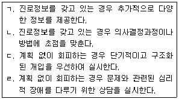
- ㄱ, ㄴ
- ㄱ, ㄷ
- ㄴ, ㄹ
- ㄱ, ㄷ, ㄹ
- ㄴ, ㄷ, ㄹ
(정답률: 43%)
5. 청소년 진로 집단상담을 운영할 때 고려할 사항으로 옳지 않은 것은?
- 집단상담 효과를 평가하여 다음 집단상담에 반영한다.
- 집단원의 요구와 집단상담 목표의 부합여부를 검토한다.
- 집단원의 응집력을 높이기 위해 개방형 집단상담을 선택한다.
- 집단원 구성, 집단의 크기, 회기의 빈도와 기간 등을 검토한다.
- 집단상담을 실시할 때 집단원 구성이 동질적인지 이질적인지를 검토한다.
(정답률: 60%)
6. 청소년 진로상담자가 갖추어야 할 역량으로 옳지 않은 것은?
- 직업훈련 지도 역량
- 자기성찰 및 자기계발 역량
- 진로관련 이론에 대한 이해
- 개인차 및 다양성에 대한 이해
- 진로 프로그램 실시 및 개발 역량
(정답률: 40%)
7. 하렌(V. Harren)이 제안한 진로의사결정 유형으로 옳은 것은?
- 합리적 유형 - 즉흥적 유형 - 의존적 유형
- 합리적 유형 - 직관적 유형 - 의존적 유형
- 주장적 유형 - 소극적 유형 - 공격적 유형
- 계획적 유형 - 직관적 유형 - 순응적 유형
- 계획적 유형 - 지연적 유형 - 운명론적 유형
(정답률: 60%)
8. 진로상담에서 심리검사 실시 및 결과해석에 관한 설명으로 옳은 것을 모두 고른 것은?
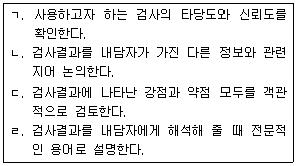
- ㄱ, ㄴ
- ㄷ, ㄹ
- ㄱ, ㄴ, ㄷ
- ㄴ, ㄷ, ㄹ
- ㄱ, ㄴ, ㄷ, ㄹ
(정답률: 58%)
9. 사비카스(M. Savickas)가 제안한 진로적응도의 하위 차원으로 옳은 것은?
- 관심 - 통제 - 호기심 - 자신감
- 유연성 - 적응성 - 반응성 - 인내
- 호기심 - 인내심 - 융통성 - 낙관성
- 일관성 - 변별성 - 일치성 - 계측성
- 자기효능감 - 결과기대 - 목표 - 진로장벽
(정답률: 20%)
10. 다위스(R. Dawis)와 롭퀴스트(L. Lofquist)가 제안한 직업적응이론에 기초하여 개발된 평가도구로 옳지 않은 것은?
- 미네소타 충족도 척도(MSS)
- 미네소타 만족도 질문지(MSQ)
- 미네소타 중요도 질문지(MIQ)
- 미네소타 진로신념 검사(MCBI)
- 미네소타 직무기술 질문지(MJDQ)
(정답률: 20%)
11. 생애진로사정(Life Career Assessment)에 관한 설명으로 옳은 것은?
- 3세대에 걸친 내담자 가족의 윤곽을 평가한다.
- 양적인 평가방법으로 다양한 생애역할을 평가한다.
- 내담자의 일, 사랑, 우정에 대한 접근방식을 평가한다.
- 내담자의 아동기 부모-자녀 간 상호작용 경험을 평가한다.
- 진로카드 분류 활동을 통해 내담자의 진로주제를 평가한다.
(정답률: 37%)
12. 사회인지진로이론에 관한 설명으로 옳은 것을 모두 고른 것은?
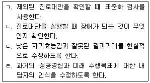
- ㄱ, ㄴ
- ㄷ, ㄹ
- ㄱ, ㄷ, ㄹ
- ㄴ, ㄷ, ㄹ
- ㄱ, ㄴ, ㄷ, ㄹ
(정답률: 27%)
13. 크럼볼츠(J. Krumboltz)가 제안한 계획된 우연이론(Planned Happenstance Theory)의 진로상담 내용으로 옳은 것을 모두 고른 것은?
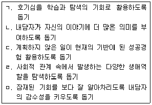
- ㄱ, ㄴ, ㄹ
- ㄱ, ㄷ, ㅁ
- ㄴ, ㄷ, ㄹ
- ㄷ, ㄹ, ㅁ
- ㄱ, ㄴ, ㄹ, ㅁ
(정답률: 25%)
14. 다음에 제시된 요인들을 공통적으로 설명하는 내용으로 옳은 것은?
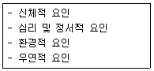
- 진로상담을 통해 달성해야 할 목표들이다.
- 학교에서 진로교육 참가자들에게 확인해야 할 특성들이다.
- 내담자들의 진로선택에 영향을 미치는 요인들이다.
- 진로상담 과정에서 변화시켜야 할 요인들이다.
- 내담자들의 진로성숙에 포함되어야 할 요인들이다.
(정답률: 41%)
15. 갓프레드슨(L. Gottfredson)의 제한ㆍ타협 이론에 관한 설명으로 옳은 것을 모두 고른 것은?
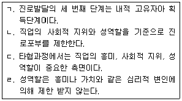
- ㄱ, ㄴ
- ㄱ, ㄷ
- ㄴ, ㄷ
- ㄴ, ㄷ, ㄹ
- ㄱ, ㄴ, ㄷ, ㄹ
(정답률: 5%)
16. 다음 사례에 나타난 내용을 탐색하는 진로상담 기법은?
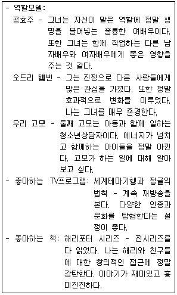
- 생애선(Lifeline)
- 진로 가계도(Career Genogram)
- 커리어-오-그램(Career-O-Gram)
- 유도된 환상 기법(Guided Fantasy Techniques)
- 진로 양식 면접(Career Style Interview)
(정답률: 43%)
17. 슈퍼(D. Super)의 C-DAC(Career Development Assessment and Counseling)모형의 평가 단계를 순서대로 옳게 나열한 것은?
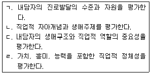
- ㄱ - ㄴ - ㄷ - ㄹ
- ㄴ - ㄱ - ㄷ - ㄹ
- ㄴ - ㄷ - ㄹ - ㄱ
- ㄷ - ㄱ - ㄹ - ㄴ
- ㄷ - ㄹ - ㄴ - ㄱ
(정답률: 10%)
18. 피터슨(G. Peterson) 등의 진로정보처리이론(Career Information Processing Theory)에 관한 설명으로 옳지 않은 것은?
- 피라미드와 커사비(CASVE)과정으로 구성되어 있다.
- 피라미드는 자기지식, 초인지의 두 가지로 구성되어 있다.
- 의사소통은 자기 내부나 주변 환경으로부터 요구가 있을 때 시작된다.
- 커사비(CASVE)과정은 의사소통, 분석, 종합, 평가, 실행으로 이루어진다.
- 초인지는 개인의 정서나 생각이 자신에게 영향을 미치는 것을 인식하도록 한다.
(정답률: 20%)
19. 여성 대상으로 진로상담을 할 때 상담자가 고려할 사항으로 옳지 않은 것은?
- 성역할 고정관념의 내재화 정도를 고려한다.
- 경력단절을 고려하여 장기적인 진로계획을 설계하도록 격려한다.
- 내담자에게 직장에서의 유리천장을 극복할 수 있는 방안을 논의한다.
- 여성의 진로발달에 대하여 상담자의 의식적ㆍ무의식적 편견을 검토한다.
- 출산과 양육에 의한 경력단절은 자연스러운 현상임을 인식하도록 교육한다.
(정답률: 37%)
20. 다음에 제시한 특성을 갖는 검사로 옳은 것은?
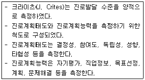
- 진로성숙도검사(Career Maturity Inventory)
- 진로결정척도(Career Decision Scale)
- 진로발달검사(Career Development Inventory)
- 진로상황검사(My Vocational Situation)
- 진로의사결정평가(Assessment of Career Decision Making)
(정답률: 22%)
21. 홀랜드(J. Holland) 성격이론의 가정으로 옳지 않은 것은?
- 사람들은 자신에게 맞는 환경을 찾는다.
- 성격과 환경이 상호작용하여 행동으로 나타난다.
- 대부분의 사람들은 여섯 가지 성격유형으로 분류된다.
- 직업 환경은 여섯 가지 유형 중의 하나로 분류될 수 있다.
- 능력, 성격, 자아개념 등 직업관련 특성은 개인차가 있다.
(정답률: 19%)
22. 고용노동부 워크넷(www.work.go.kr)에서 제공하는 중ㆍ고등학생 대상 직업심리검사에 해당하지 않는 것은?
- 대학전공(학과)흥미검사
- 청소년직업흥미검사
- 고등학생적성검사
- 진로의사결정유형검사
- 청소년진로발달검사
(정답률: 25%)
23. 다음에 제시된 진로교육의 각 영역별 세부목표가 적용되는 학교급은?
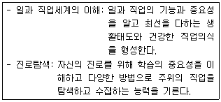
- 초등학교
- 중학교
- 고등학교
- 전문대학
- 4년제 대학교
(정답률: 20%)
24. 슈퍼(D. Super)의 전생애이론 생애단계가 포함하는 하위단계로 옳은 것은?
- 성장기는 잠정기를 포함한다.
- 탐색기는 시행기를 포함한다.
- 확립기는 명료화기를 포함한다.
- 유지기는 안정화기를 포함한다.
- 쇠퇴기는 개선기를 포함한다.
(정답률: 11%)
25. 진로상담의 목표와 이론이 바르게 짝지어진 것은?
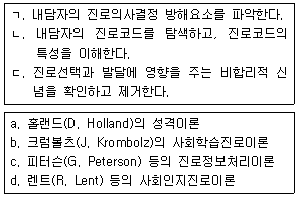
- ㄱ - a
- ㄴ - b
- ㄴ - d
- ㄷ - b
- ㄷ - c
(정답률: 6%)
2과목: 집단상담
26. 게슈탈트 집단상담에 관한 설명으로 옳은 것을 모두 고른 것은?
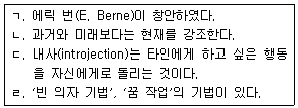
- ㄱ, ㄴ
- ㄴ, ㄷ
- ㄴ, ㄹ
- ㄱ, ㄴ, ㄹ
- ㄴ, ㄷ, ㄹ
(정답률: 10%)
27. 교류분석 집단상담에 관한 설명으로 옳지 않은 것은?
- 개인의 여러 자아상태를 이해함으로써 변화를 가져온다.
- 부모, 성인, 어린이 자아상태가 삶에 적용되는 것을 다룬다.
- 커뮤니케이션 이론, 아동발달 이론과 연관된다.
- 상보적 의사교류는 의사교류의 자극과 반응이 평행을 이룬다.
- 스트로크는 게임을 통해 경험하게 되는 불쾌한 감정을 말한다.
(정답률: 35%)
28. 현실치료 집단상담에 관한 설명으로 옳은 것을 모두 고른 것은?
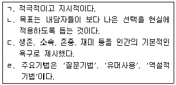
- ㄱ, ㄴ
- ㄴ, ㄷ
- ㄷ, ㄹ
- ㄱ, ㄴ, ㄹ
- ㄱ, ㄴ, ㄷ, ㄹ
(정답률: 10%)
29. 참만남집단에 관한 설명으로 옳은 것은?
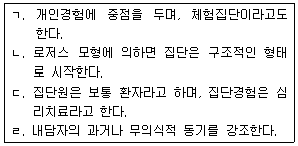
- ㄱ
- ㄱ, ㄴ
- ㄷ, ㄹ
- ㄱ, ㄴ, ㄷ
- ㄱ, ㄴ, ㄷ, ㄹ
(정답률: 20%)
30. 행동주의 집단상담에 관한 설명으로 옳은 것을 모두 고른 것은?
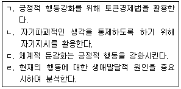
- ㄱ, ㄴ
- ㄴ, ㄷ
- ㄱ, ㄴ, ㄹ
- ㄱ, ㄷ, ㄹ
- ㄱ, ㄴ, ㄷ, ㄹ
(정답률: 39%)
31. 정신분석 집단상담에 관한 설명으로 옳지 않은 것은?
- 집단원의 문제행동과 관련된 역사적인 근거를 탐색한다.
- 집단원의 무의식적 동기를 해석을 통해 의식화시킨다.
- 집단원의 고착된 의사소통 영역을 확장시킨다.
- 집단원의 자율성을 권장하기 위해 권유, 지적을 자제한다.
- 집단원의 즉각적인 문제해결보다는 장기간의 성격 재구성에 도움을 준다.
(정답률: 28%)
32. 합리정서행동(REBT) 집단상담에 관한 설명으로 옳은 것을 모두 고른 것은?
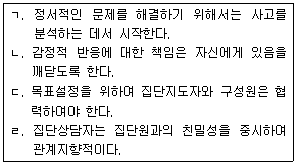
- ㄱ, ㄴ
- ㄷ, ㄹ
- ㄱ, ㄴ, ㄷ
- ㄴ, ㄷ, ㄹ
- ㄱ, ㄴ, ㄷ, ㄹ
(정답률: 28%)
33. 로저스(C. Rogers)의 인간중심 집단상담 과정에서의 경험을 모두 고른 것은?
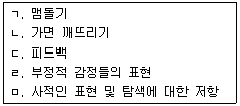
- ㄷ, ㄹ
- ㄱ, ㄴ, ㄷ
- ㄴ, ㄹ, ㅁ
- ㄱ, ㄴ, ㄷ, ㄹ
- ㄱ, ㄴ, ㄷ, ㄹ, ㅁ
(정답률: 27%)
34. 아들러(A. Adler)의 개인심리 집단상담에 관한 설명으로 옳은 것은?
- 집단원의 자기패배적 언어와 행동을 반박한다.
- 집단원의 사회적 상황과 사회적 태도를 파악한다.
- 열등감의 근원 탐색이 아닌 우월성 추구를 목표로 한다.
- 빈 의자 기법, 혐오치료의 기법을 활용한다.
- 가족구도, 생활양식 분석의 기법을 활용하지 않는다.
(정답률: 43%)
35. 말러(A. Mahler)의 집단상담 과정에서 집단의 과도기 단계 특징은?
- 집단원간의 신뢰감 수준이 높은 편이다.
- 집단참여에 적극적인 태도를 보인다.
- 집단원은 흔히 자신에 대한 초점을 회피하지 않는다.
- 집단원의 불안 수준은 낮은 편이다.
- 거기-그때(there and then)에 맞추어 이야기하는 경향이 있다.
(정답률: 30%)
36. 성적이 부진한 중학생들에게 학습능력 향상을 목적으로 체계화된 프로그램을 매주 1회 12주 진행되는 집단의 유형은?
- 비구조화된 동질적 구성의 집중적 집단
- 구조화된 동질적 구성의 집중적 집단
- 구조화된 동질적 구성의 분산적 집단
- 비구조화된 이질적 구성의 분산적 집단
- 구조화된 이질적 구성의 집중적 집단
(정답률: 23%)
37. 다음과 관련 있는 집단상담의 치료적 요인은?
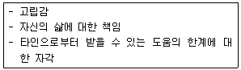
- 실존적 요인
- 일차 가족집단의 교정적 재현
- 희망 고취
- 직면
- 모험 시도
(정답률: 39%)
38. 집단상담 초기단계에서 치료적 요소를 촉진하기 위한 방법으로 옳지 않은 것은?
- 집단상담의 방향과 목표, 규범을 정한다.
- 집단상담에 대한 책임이 집단원에게도 있음을 알려준다.
- 저항을 표출하는 집단원의 행동을 수용한다.
- 집단상담자의 자기개방은 적절하지 않다.
- 집단상담자가 자신의 감정을 표현하는 방법을 보여준다.
(정답률: 58%)
39. 집단상담자의 전문적 자질이 아닌 것은?
- 집단 계획 및 운영 능력
- 집단원으로서의 집단참여 경험
- 인간행동의 긍정적 변화에 대한 신념
- 인간발달에 대한 이해와 폭넓은 식견
- 상담이론 및 실제에 대한 지식과 이해
(정답률: 15%)
40. 집단상담자의 윤리적 행동으로 옳은 것을 모두 고른 것은?
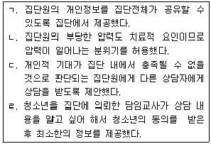
- ㄱ, ㄴ
- ㄷ, ㄹ
- ㄱ, ㄴ, ㄷ
- ㄴ, ㄷ, ㄹ
- ㄱ, ㄴ, ㄷ, ㄹ
(정답률: 50%)
41. 두 명의 상담자가 공동으로 진행하는 집단상담에 관한 설명으로 옳은 것은?
- 집단활동 중에는 공동상담자 간의 상호작용을 자제한다.
- 공동상담자 간의 경쟁관계는 생산적인 집단역동을 촉진한다.
- 공동상담자들은 집단회기 이외의 시간에 서로의 의견 차이를 논의한다.
- 형평성 차원에서 공동상담자들이 매 집단회기를 교대로 진행해야 한다.
- 공동상담자의 집단상담에 대한 이론적 관점이 상반될수록 집단에 도움이 된다.
(정답률: 43%)
42. 집단규범에 관한 설명으로 옳지 않은 것은?
- 집단에서 권장하는 행동과 같은 긍정적인 규범도 있다.
- 개별 집단원의 권리보다 집단 전체의 이익이 더 우선되어야 한다.
- 집단상담자는 개입 행동을 통해 집단규범의 준거를 제시할 수 있다.
- 집단원들의 선입견에 의해 형성된 암묵적 규범은 집단에 부정적 영향을 미칠 수 있다.
- 집단상담자는 집단규범 형성을 촉진하기 위해 집단원들의 지금-여기에서의 자각을 독려한다.
(정답률: 57%)
43. 집단상담자의 역할에 관한 설명으로 옳은 것을 모두 고른 것은?
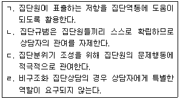
- ㄱ, ㄷ
- ㄴ, ㄹ
- ㄱ, ㄴ, ㄷ
- ㄴ, ㄷ, ㄹ
- ㄱ, ㄴ, ㄷ, ㄹ
(정답률: 24%)
44. 중ㆍ고등학교 장면에서 청소년 집단상담을 진행할 때 집단상담자가 고려할 사항으로 옳지 않은 것은?
- 청소년의 자율성 증진을 위해 비구조화 집단상담이 더 효과적이다.
- 청소년기에는 또래와의 상호작용이 중요하므로 집단 크기를 고려한다.
- 문화적 민감성을 토대로 청소년 하위문화를 이해하고 존중하는 태도를 보인다.
- 수업시간을 고려하여 집단참여가 가능한 학생들을 중심으로 집단원을 선발한다.
- 비자발적으로 의뢰된 청소년에게는 집단에 참여하지 않을 권리와 집단참여를 거부할 경우 수반되는 책임을 알려준다.
(정답률: 53%)
45. 다음 대화에서 집단상담자가 적용한 기술(ㄱ~ㄴ)을 순서대로 옳게 나열한 것은?
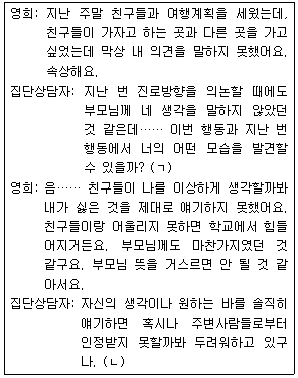
- 직면하기, 연결하기
- 연결하기, 해석하기
- 반영하기, 자기개방하기
- 질문하기, 자기개방하기
- 해석하기, 직면하기
(정답률: 45%)
46. 집단상담구조화에 관한 설명으로 옳은 것을 모두 고른 것은?
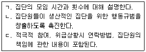
- ㄱ
- ㄴ
- ㄱ, ㄴ
- ㄴ, ㄷ
- ㄱ, ㄴ, ㄷ
(정답률: 48%)
47. 집단상담 평가과정을 순서대로 나열한 것은?
- 정보수집 - 평가계획 수립 - 현상기술 - 현상설명 - 대안제시 - 재과정
- 정보수집 - 현상설명 - 현상기술 - 평가계획 수립 - 재과정 - 대안제시
- 현상기술 - 평가계획 수립 - 정보수집 - 현상설명 - 대안제시 - 재과정
- 평가계획 수립 - 정보수집 - 현상기술 - 현상설명 - 대안제시 - 재과정
- 평가계획 수립 - 현상기술 - 정보수집 - 현상설명 - 재과정 - 대안제시
(정답률: 43%)
48. 집단상담 평가에 관한 설명으로 옳지 않은 것은?
- 평가계획은 집단계획단계에서 수립한다.
- 집단목표를 관리하는 데 일차적인 목적을 둔다.
- 평가준거에 따라 진단평가, 형성평가, 총괄평가로 구분된다.
- 평가결과는 집단상담의 내용과 방법에 대한 수정 및 보완에 활용된다.
- 평가내용에는 집단의 분위기, 집단원의 변화 정도, 의사소통 형태가 포함된다.
(정답률: 25%)
49. 집단상담에서 개인의 행동을 제한해야 할 경우를 모두 고른 것은?
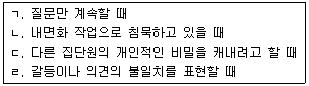
- ㄱ, ㄷ
- ㄴ, ㄹ
- ㄱ, ㄴ, ㄷ
- ㄴ, ㄷ, ㄹ
- ㄱ, ㄴ, ㄷ, ㄹ
(정답률: 35%)
50. 문제행동을 하는 집단원에 대한 집단상담자의 대처 반응을 연결한 것으로 옳지 않은 것은?
- 상처싸매기 하는 집단원 - 미해결 감정을 탐색해 보게 한다.
- 충고하는 집단원 - 충고하는 행동의 동기를 탐색해 보게 한다.
- 침묵하는 집단원 - 표정이나 태도를 언급하면서 자연스럽게 집단참여를 유도한다.
- 의존하는 집단원 - 집단상담자 자신이 집단원의 의존행동을 조장하지 않았는지 탐색해 본다.
- 대화를 독점하는 집단원 - 다른 집단원들이 독점 집단원에 대해 불만을 표현하도록 허용하면서 집단원들끼리 해결할 때까지 기다린다.
(정답률: 50%)
3과목: 가족상담
51. 개인상담과 비교한 가족상담의 특성으로 옳은 것을 모두 고른 것은?
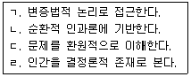
- ㄱ, ㄴ
- ㄱ, ㄷ
- ㄴ, ㄹ
- ㄱ, ㄴ, ㄷ
- ㄴ, ㄷ, ㄹ
(정답률: 0%)
52. 체계이론을 적용한 가족에 관한 설명으로 옳은 것을 모두 고른 것은?
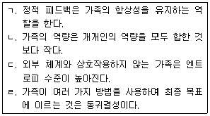
- ㄱ, ㄴ
- ㄱ, ㄷ
- ㄷ, ㄹ
- ㄱ, ㄷ, ㄹ
- ㄴ, ㄷ, ㄹ
(정답률: 16%)
53. 가족상담 초기 단계에 상담자의 과업으로 옳지 않은 것은?
- 가족의 상호작용 과정을 탐색한다.
- 상담 과정을 설명하고 구조화한다.
- 구체적인 문제와 시도했던 해결책을 점검한다.
- 궁금한 점에 대해 질문할 수 있도록 격려한다.
- 해석을 통해 내담자가 문제의 원인을 통찰하도록 돕는다.
(정답률: 29%)
54. 다음 사례에서 상담자가 부부에게 시도하고 있는 구조적 가족상담 기법은?
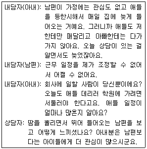
- 실연
- 재정의
- 과제부여
- 경계선 설정
- 균형 깨뜨리기
(정답률: 15%)
55. 다음 상담자의 행동에 공통적으로 나타난 가족상담 윤리는?
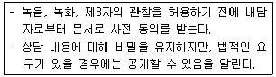
- 고지된 동의
- 이중관계 금지
- 자기결정권 존중
- 의뢰에 대한 책임
- 지역사회에 대한 기여
(정답률: 35%)
56. 보웬(Bowen)의 가족상담에 관한 설명으로 옳지 않은 것은?
- 3대 이상의 가계도를 통해 가족 구조와 관계 패턴을 살펴본다.
- 과정 질문을 통해 내담자의 내면 및 타인과의 관계를 탐색한다.
- 상담자는 가족의 삼각관계를 이해할 수 있도록 가족과 융합한다.
- 충동적이거나 감정적으로 반응하는 가족원을 분화 수준이 낮은 것으로 본다.
- 내담자가 확대가족의 구성원과 관계를 맺고 연결하는 것은 분화 수준을 높이는 과정에 포함된다.
(정답률: 14%)
57. 후기 가족상담의 발달에 영향을 준 요인으로 옳은 것은?
- 역할이론
- 사회구성주의
- 집단 역동 운동
- 아동상담소 운동
- 조현병 가족 연구
(정답률: 22%)
58. 듀발(Duvall)이 제시한 가족생활주기에 관한 설명으로 옳은 것을 모두 고른 것은?
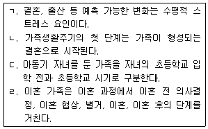
- ㄱ, ㄹ
- ㄴ, ㄷ
- ㄱ, ㄴ, ㄷ
- ㄴ, ㄷ, ㄹ
- ㄱ, ㄴ, ㄷ, ㄹ
(정답률: 6%)
59. 집단 따돌림 가해자인 청소년과 가족 사정을 위해 사용할 수 있는 도구와 목적의 연결로 옳지 않은 것은?
- KFD - 가족 역동 관계 파악
- MBTI - 청소년 자녀와 부모의 성격 유형 파악
- MMPI - 청소년 자녀와 부모의 심리ㆍ정서적 어려움 평가
- FACES - 가족 응집성과 적응성 측정
- PREPARE - 부부 관계 건강성 평정
(정답률: 32%)
60. 다음 두 내담자 사례에 공통적으로 나타난 인지행동적 가족상담의 역기능적 신념은?
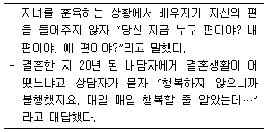
- 축소
- 개인화
- 독심술
- 이분법적 사고
- 선택적 추상화
(정답률: 35%)
61. 다음 사례에서 상담자가 사용한 전략적 가족상담 기법은?
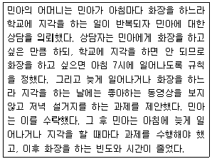
- 시련 처방
- 의식 기법
- 증상 처방
- 협상 기법
- 은유적 과제
(정답률: 24%)
62. 사티어(Satir)의 의사소통 유형에 관한 설명으로 옳은 것을 모두 고른 것은?
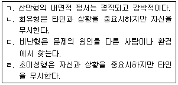
- ㄱ, ㄷ
- ㄴ, ㄷ
- ㄷ, ㄹ
- ㄱ, ㄴ, ㄷ
- ㄴ, ㄷ, ㄹ
(정답률: 17%)
63. 가족상담 모델에서 상담자의 역할로 옳지 않은 것은?
- MRI 모델: 내담자가 제시한 문제의 해결을 상담 목표로 삼는다.
- 밀란 모델: 중립성을 지키며 가족 스스로 해결책을 찾도록 돕는다.
- 이야기치료: 내담자가 '나-입장'을 취할 수 있도록 능동적으로 코칭한다.
- 구조적 가족상담: 가족체계에 합류하면서 상담자 자신을 도구로 활용한다.
- 경험적 가족상담: 내담자와 진솔하게 연결되어 상담자와 가족원들의 감정을 드러나게 한다.
(정답률: 0%)
64. 청소년기 자녀가 있는 가족의 특성 및 가족발달과제에 관한 설명으로 옳지 않은 것은?
- 가족경계의 확대가 요구된다.
- 가족경계의 융통성을 증가시킬 필요가 있다.
- 부모와 자녀 관계에서 자립과 의존의 갈등이 증가된다.
- 부모의 부부관계 및 진로문제에 대한 재인식이 필요하다.
- 부모는 배우자, 형제, 동료의 상실에 대응하고, 죽음을 준비해야 한다.
(정답률: 29%)
65. 가족상담 모델과 상담목표의 연결로 옳지 않은 것은?
- 다세대 가족치료 - 불안수준의 감소
- MRI모델 - 증상제거 및 행동변화
- 구조적 가족상담 - 가족의 재구조화
- 해결중심모델 - 무의식적 상호작용의 의식화
- 경험적 가족치료 - 느낌의 표현 및 자발성 성장
(정답률: 29%)
66. 가족상담의 실제와 관련된 내용으로 옳지 않은 것은?
- 여러 가족원이 동시에 말하는 경우 상담자가 특정 가족원을 지정해서 질문할 수 있다.
- 다른 가족원을 대신해서 이야기해서는 안 된다는 규칙을 만들어 놓는 것이 효과적이다.
- 다른 가족을 비난하는 경우 평소 상호작용이 드러난 것이므로 비난을 지속하도록 허용한다.
- 내담자가 두서없이 말하는 경우 상담자는 상담주제로 대화의 초점을 전환시킨다.
- 가족구성원들이 상담을 통해 습득한 대처방법이나 행동방식을 계속 유지하는 것은 종결의 지표이다.
(정답률: 29%)
67. 가정 내에서 폭력문제를 보이는 청소년 가족에 대한 이해 및 개입에 관한 설명으로 옳지 않은 것은?
- 폭력의 대상은 가족 내에서 자신보다 힘이 약한 사람이다.
- 어머니에 대해 의존과 폭력이라는 양면적인 태도를 보인다.
- 폭력을 청소년 개인의 병리가 아닌 가족체계의 병리로 간주하여 개입한다.
- 가정 내 폭력행위 외에 가정 밖에서 도벽, 약물남용, 범죄행위 등을 동반한다.
- 가족들이 폭력문제를 보이는 청소년의 눈치를 보며 맞춰주면 오히려 공격성을 자극할 수 있음을 주지시킨다.
(정답률: 10%)
68. 이혼한 내담자와의 상담에서 부모-자녀 관계에 관한 상담자의 개입으로 옳지 않은 것은?
- 가족경계선을 재구조화하도록 돕는다.
- 부모가 자녀에게 일관된 규칙을 가지고 대하도록 한다.
- 자녀가 새로운 가족체계에 대한 두려움을 가질 수 있음을 설명한다.
- 자녀가 부모 중 누구 편을 들어야 할지 갈등할 수 있음을 설명한다.
- 양육부모와의 관계를 강화하기 위하여 비양육부모와의 면접교섭을 자제하도록 조언한다.
(정답률: 35%)
69. 가족상담 기법 및 개념에 관한 설명으로 옳은 것을 모두 고른 것은?
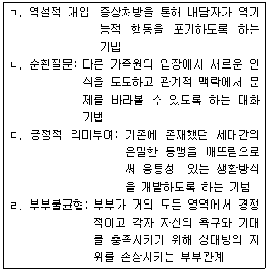
- ㄱ, ㄴ
- ㄴ, ㄷ
- ㄷ, ㄹ
- ㄱ, ㄴ, ㄹ
- ㄱ, ㄷ, ㄹ
(정답률: 17%)
70. 가족상담 이론가와 주요 개념 및 기법의 연결로 옳은 것은?
- 보웬(Bowen) - 핵가족 정서체계, 치료적 삼각관계
- 사티어(Satir) - 의사소통유형, 증상처방
- 마다네스(Madanes) - 가족게임, 가장기법
- 헤일리(Haley) - 위계질서, 체계적 둔감화
- 미누친(Minuchin) - 정서적 단절, 일치적 의사소통
(정답률: 25%)
71. 부모와 청소년 자녀간의 갈등으로 가족상담에 참여한 사례에 대한 상담 방법으로 적절하지 않은 것은?
- 가족 내 학대나 폭력 문제가 있는지 확인한다.
- 반항하는 자녀의 문제가 가족 전체의 문제를 드러내는 증상인지 확인한다.
- 상담목표의 선정과 상담진행과정에서 부모의 의견을 자녀의 의견에 우선해서 반영한다.
- 가족들이 그동안 표현하지 못했던 감정을 솔직하게 표현할 수 있도록 격려한다.
- 초기상담에서는 수용적 자세로 가족원들이 상담에 대해 편안하게 느끼고 마음을 열 수 있도록 한다.
(정답률: 29%)
72. 다음 사례에 대한 상담자의 개입으로 옳지 않은 것은?
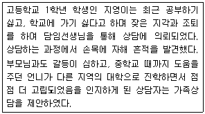
- 학교 폭력이 있었는지 확인한다.
- 자해의 강도, 빈도, 방법을 확인하고 생명존중서약을 받는다.
- 지영이가 학교에 가기 싫다고 할 무렵 가족 내에 발생한 문제가 있었는지 확인한다.
- 가족조각을 활용하여 지영이가 다른 가족구성원에게 느끼는 내적 정서 상태를 탐색한다.
- 지영이가 자해의 위험이 있음을 담임교사를 통해 같은 반 학생들에게 알려 도와주도록 한다.
(정답률: 27%)
73. 다음 상담자와 아동의 대화에 나타난 이야기치료 기법은?
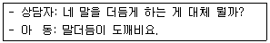
- 모방
- 공명하기
- 스캐폴딩
- 외재화하기
- 대안적 이야기
(정답률: 30%)
74. 다음이 설명하는 해결중심모델의 상담자-내담자 관계유형과 그 유형에 부여할 과제의 연결로 옳은 것은?
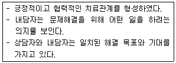
- 방문형 - 상담에 온 것을 칭찬하고 상담에 오도록 격려하며 과제를 주지 않는다.
- 불평형 - 다른 사람의 긍정적인 부분을 관찰하는 과제를 준다.
- 불평형 - 문제의 원인이라 생각하는 가족원에 대한 비난을 멈추고 감사할 내용을 찾아 표현해보게 한다.
- 고객형 - 예외적 상황이 일어날 수 있는 행동을 더 많이 하는 과제를 준다.
- 고객형 - 문제의 원인을 찾기 위해 가족원들을 관찰하는 과제를 준다.
(정답률: 19%)
75. 가족상담 모델과 개입방법 예시의 연결로 옳은 것은?
- 이야기치료 - 엄마의 우울증을 외재화하고 변화를 위한 과제를 제시한다.
- 다세대 모델 - 가계도를 통해 삼각관계 유형이 세대간에 어떻게 계속되는지 살펴본다.
- 해결중심모델 - 질문기법을 사용하여 자녀의 야뇨증 원인을 파악한다.
- 구조적 모델 - 아빠와 아들의 연합을 강화하여 남성하위체계를 명확하게 한다.
- 경험적 모델 - 청소년 자녀와 갈등을 보이는 가족에게 대안적 이야기를 재구성하도록 돕는다.
(정답률: 30%)
4과목: 학업상담
76. 맥키치(W. McKeachie)가 제시한 정교화전략의 기법은?
- 암송
- 조직화
- 심상법
- 목표설정
- 복습
(정답률: 6%)
77. 학습장애 진단에 사용하는 검사를 모두 고른 것은?
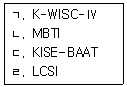
- ㄱ, ㄴ
- ㄱ, ㄷ
- ㄴ, ㄷ
- ㄱ, ㄷ, ㄹ
- ㄴ, ㄷ, ㄹ
(정답률: 10%)
78. 다음에서 설명하는 학습전략은?
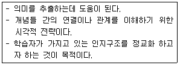
- PMI(Plus-Minus-Interesting)
- 장소법
- 강제관련법
- 체크리스트
- 개념도
(정답률: 5%)
79. 다음에서 혜진이가 보이는 학습부진 요인은?
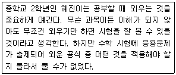
- 인지적 요인
- 정서적 요인
- 사회적 요인
- 환경적 요인
- 관계적 요인
(정답률: 10%)
80. 학습의 요인 중 흥미에 관한 설명으로 옳지 않은 것은?
- 개인의 기질적 특성의 하나로 보는 관점도 있다.
- 상황적, 환경적 특성의 변화를 통해 학생이 흥미를 느끼도록 하는 공부 방법을 개발하는 것이 필요하다.
- 하이디와 레닝거(Hidi & Renninger)에 따르면 흥미는 상황에 따라 일시적으로 시작되지만 필요한 지원을 얻게 되면 떨어진다.
- 개인적 성향이 특정한 맥락과의 상호작용을 통해 심리적 상태로 활성화되는 것으로 보는 관점도 있다.
- 레닝거(Renninger) 모델에 따르면 흥미는 정서적인 측면보다 선행지식의 수준이나 가치부여 등의 측면이 더 강한 개념으로 볼 수도 있다.
(정답률: 9%)
81. 맥키치(W. McKeachie)가 제시한 학습전략 중 자원관리 전략이 아닌 것은?
- 따라 읽음, 밑줄 치기, 복사 등의 시연
- 목표설정, 시간표 작성 등의 시간 관리
- 장소정리, 조용한 장소에서 하는 공부환경 조성
- 노력에 대한 귀인, 자기강화 등의 노력
- 교사나 동료로부터의 조력을 추구
(정답률: 5%)
82. 테일러(R. Taylor)가 제시한 학습과진아(overachiever)와 학습부진아(underachiever)의 비교특성으로 옳지 않은 것은?
- 학습과진아는 목표 설정이 현실적이고 성공적이지만, 학습부진아는 목표에 대해 비현실적이고 실패를 경험한다.
- 학습과진아는 상대적으로 대인관계에 적응적이지만, 학습부진아는 고립감을 느끼기 쉽다.
- 학습과진아는 성인과 비교적 원만한 관계를 유지하지만, 학습부진아는 회피하거나 적대감을 가진다.
- 학습과진아는 학업에 대해 긴장감이 있지만, 학습부진아는 불안을 느끼지 않는다.
- 학습과진아는 자신을 수용하고 낙관적이지만, 학습부진아는 자기비판적이고 부적절감을 가진다.
(정답률: 15%)
83. 댄서로우(D. Dansereau)가 제시한 학습전략의 주전략이 아닌 것은?
- 이해전략
- 파지전략
- 회상전략
- 사용전략
- 동기화전략
(정답률: 0%)
84. 시간관리 전략으로 옳은 것을 모두 고른 것은?
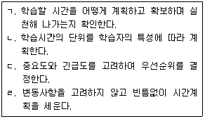
- ㄱ, ㄴ
- ㄱ, ㄴ, ㄷ
- ㄱ, ㄷ, ㄹ
- ㄴ, ㄷ, ㄹ
- ㄱ, ㄴ, ㄷ, ㄹ
(정답률: 6%)
85. 노트필기 전략에 관한 설명으로 옳은 것을 모두 고른 것은?
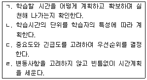
- ㄱ, ㄴ
- ㄴ, ㄷ
- ㄷ, ㄹ
- ㄱ, ㄴ, ㄷ
- ㄱ, ㄴ, ㄹ
(정답률: 0%)
86. 옥스퍼드와 크루칼(Oxford & Crookall)이 제시한 6가지 외국어 학습전략에 해당하지 않는 것은?
- 기억 전략
- 보상 전략
- 정의적 전략
- 언어적 전략
- 사회적 전략
(정답률: 0%)
87. 학습장애 진단 모형으로서 중재반응(Response-to-Intervention) 모델에 관한 설명으로 옳은 것은?
- 개인의 능력과 성취간의 불일치만으로 학습장애를 판별하는 모델이다.
- 임상적 진단을 지나치게 강조하고 현장에서의 교육을 소홀히 했다는 비판을 받는다.
- 학년수준편차 공식을 사용하여 단회에 학습장애를 진단한다.
- 학습문제를 가진 학생을 조기에 선별하여 중재를 실시하고, 중재에 대한 반응에 따라 학습장애 학생을 선별하는 모델이다.
- 3단계 중 1단계는 강도 높은 개별화 중재를 제공하는 단계이다.
(정답률: 10%)
88. 토마스와 로빈슨(Tomas & Robinson)의 PQ4R에 해당하지 않는 것을 모두 고른 것은?
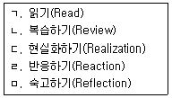
- ㄱ, ㅁ
- ㄷ, ㄹ
- ㄱ, ㄴ, ㅁ
- ㄴ, ㄷ, ㄹ
- ㄷ, ㄹ, ㅁ
(정답률: 10%)
89. 시험불안과 관련된 설명으로 옳은 것을 모두 고른 것은?
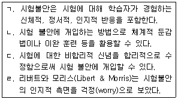
- ㄱ, ㄴ
- ㄷ, ㄹ
- ㄱ, ㄴ, ㄷ
- ㄴ, ㄷ, ㄹ
- ㄱ, ㄴ, ㄷ, ㄹ
(정답률: 0%)
90. 학업부진 영재아를 돕기 위한 전략으로 옳지 않은 것은?
- 완벽을 추구하는 내담자에게는 자신의 능력보다 높은 이상적 목표를 설정하도록 한다.
- 과민성을 보이는 내담자에게는 자극에 대해 선택적으로 주의를 집중하게 하고, 이를 관리할 수 있도록 돕는다.
- 내담자가 대인관계를 통해 관계기술을 적절히 학습하고 있는지 검토한다.
- 상담과정에서 가족 및 부모의 지지와 참여를 강조한다.
- 학업적 특성에 맞는 교육 경험을 할 수 있도록 돕는다.
(정답률: 10%)
91. 발레란드와 비소네트(Vallerand & Bissonnette)가 제시한 학습동기의 단계 중 다음이 설명하는 단계는?
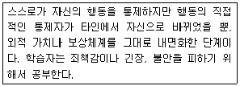
- 유익 추구(Extrinsic-identified regulation)
- 지적 자극 추구(Intrinsic-to experience stimulation)
- 내적 강압(Extrinsic-introjected regulation)
- 지적 성취 추구(Intrinsic-to accomplish to things)
- 외적 강압(Extrinsic-external regulation)
(정답률: 10%)
92. 마이켄바움과 굿맨(Meichenbaum & Goodman)이 제시한 자기-교시 훈련 단계에 따르면, 상담자는 보기의 바로 다음 단계로 무엇을 해야 하는가?
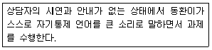
- 동환이로 하여금 소리 내지 않고 마음속으로 자기 통제 언어를 사용하면서 과제를 수행하도록 한다.
- 상담자의 시연과 지도하에 동환이가 자기 통제 언어를 큰소리로 말하면서 과제를 수행하도록 한다.
- 동환이로 하여금 자기통제 언어를 입 밖으로 소리내되 작은 소리를 내면서 과제를 수행하도록 한다.
- 동환이가 가지고 있는 비합리적 신념을 합리적 신념으로 수정하여 과제를 수행하도록 한다.
- 상담자가 과제를 수행하면서 입 밖으로 자기통제 언어를 큰 소리로 말하고, 동환이에게 관찰하도록 한다.
(정답률: 10%)
93. 반두라(A. Bandura)가 제시한 효능감 정보원이 아닌 것은?
- 성공경험
- 생리적ㆍ정서적 상태
- 대리적 경험
- 귀인의 통제소재
- 언어적(사회적) 설득
(정답률: 6%)
94. 학업상담에서 검사를 사용할 때 주의사항으로 옳지 않은 것은?
- 검사를 실시하고자 하는 목적을 명확히 한다.
- 검사의 실시와 해석이 내담자 문화에 적절하게 적용될 수 있는지 확인한다.
- 내담자가 검사 결과를 잘못 이해하지 않도록 정확한 해석을 제공한다.
- 검사 결과를 절대적으로 신뢰하여 내담자에게 진단명을 전달하는데 초점을 둔다.
- 검사는 자격이 있는 사람이 표준화된 절차에 따라 실시해야 한다.
(정답률: 10%)
95. K-WISC-Ⅳ를 사용하여 얻을 수 있는 점수로 옳지 않은 것은?
- 전체지능지수(FSIQ)
- 동기선별지표(MSI)
- 언어이해지표(VCI)
- 작업기억지표(WMI)
- 처리속도지표(PSI)
(정답률: 18%)
96. DSM-5에서 제시한 특정학습장애의 진단 기준으로 옳은 것은?
- 학습기술을 배우고 사용하는데 있어서의 어려움이 최소 3개월 이상 지속된다.
- 17세 미만인 경우 학습의 어려움에 대한 과거 병력이 표준화된 평가를 대신할 수 있다.
- 학습의 어려움은 학령기에 시작되나 해당 학습 기술을 요구하는 정도가 개인의 능력을 넘어서는 시기가 되어야 분명히 드러날 수도 있다.
- 학습의 어려움이 지적장애나 적절한 교육 부족으로 더 잘 설명될 때에도 진단내릴 수 있다.
- 학습의 어려움이 최소 3개 이상의 학업기술이나 학업영역에 나타나야 한다.
(정답률: 15%)
97. A와 B에 들어갈 내용으로 옳게 짝지어진 것은?
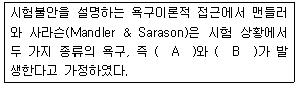
- (A) 자기실현 욕구, (B) 인정 욕구
- (A) 내적귀인 욕구, (B) 불안 욕구
- (A) 사랑과 소속의 욕구, (B) 합리화 욕구
- (A) 과제수행욕구, (B) 불안 욕구
- (A) 합리화 욕구, (B) 인정 욕구
(정답률: 6%)
98. 켈러(J. Keller)가 제시한 학습자의 동기를 유발하기 위해 충족되어야 할 조건이 아닌 것은?
- 주의(Attention)
- 준비성(Readiness)
- 만족감(Satisfaction)
- 자신감(Confidence)
- 관련성(Relevance)
(정답률: 6%)
99. 로젠샤인과 스티븐스(Rosenshine & Stevens)가 제시한 것으로, 학생과 긍정적인 관계를 형성할 수 있는 교사의 피드백을 모두 고른 것은?
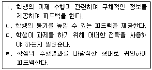
- ㄱ, ㄹ
- ㄴ, ㄷ
- ㄱ, ㄷ, ㄹ
- ㄴ, ㄷ, ㄹ
- ㄱ, ㄴ, ㄷ, ㄹ
(정답률: 11%)
100. 다음에서 설명하는 자기조절 학습전략은?
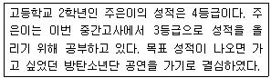
- 자기평형
- 조직화와 변형
- 환경의 구조화
- 자기강화
- 자료검토
(정답률: 5%)